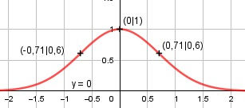

Aufgabe 152 f(x) = e-x2 Kettenregel erste Ableitung: f'(x) = -2x * e-x2 Produktregel zweite Ableitung: u = -2x, u' = -2 v = e-x2 Kettenregel: v' = -2x * e-x2 f''(x) = -2 * e-x2+ (-2x) * e-x2* (-2x) 4x2 - 2 f''(x) = e-x2* (4x2 - 2) = --------- ex2 Zur Beurteilung, ob f'''(x) ≠ 0: (Begründung siehe Aufgabe 105) u = 4x2 - 2, u' = 8x u' 8x f'''(x) = --- = ----- ≠ 0 für x ≠ 0 v ex2 Definitionsbereich: -∞ < x < ∞ Waagerechte Asymptote: 1 f(x) = e-x20 ------ geht gegen 0 für x --> ± ∞ ex2 Wertebereich: f(x) wird dann am größten, wenn x = 0 (Extrempunkt) f(0) = 1 --> 0 < f(x) ≤ 1 Symmetrie zur y-Achse bzw. zum Punkt (0|0): f(-x) = e-(-x)2 = e-x2 = f(x) --> Achsensymmetrie -f(-x) = -e-x2≠ f(x) --> keine Punktsymmetrie Nullstellen: f(x) = 0 e-x2 = 0 |ln ln e-x2 = ln 0 -x2 * ln e = 1 -x2 = 1 |*(-1) x2 = -1 |ⱱ --> keine Lösung --> keine Nullstellen Schnittpunkt mit der y-Achse: x = 0 f(0) = e-02 = 1 Sy(0|1) Extrempunkte: f'(x) = 0 -2x * e-x2 = 0 |:e-x2 -2x = 0 |*(-1) 2x = 0 |:2 x = 0, f(0) = 1 e-x2 = 0 |ln ln e-x2 = ln 0 -x2 * ln e = 1 -x2 = 1 |*(-1) x2 = -1 |ⱱ --> keine weitere Lösung f''(0) = e-02 * (4 * 02 - 2) < 0 --> Hochpunkt (0|1) Wendepunkte: f''(0) = 0 e-x2 * (4 * x2 - 2) = 0 e-x2 = 0 |ln ln e-x2 = ln 0 -x2 * ln e = 1 -x2 = 1 |*(-1) x2 = -1 |ⱱ --> keine Lösung 4x2 - 2 = 0 |+2 4x2 = 2 |:4 x2 = 0,5 | ⱱ x1,2 = ± 0,71 x = 0,71 f(0,71) = e-0,712 = 0,6 WP1(0,71|0,6) Wegen Achsensymmetrie WP2(-0,71|0,6) Graph:
